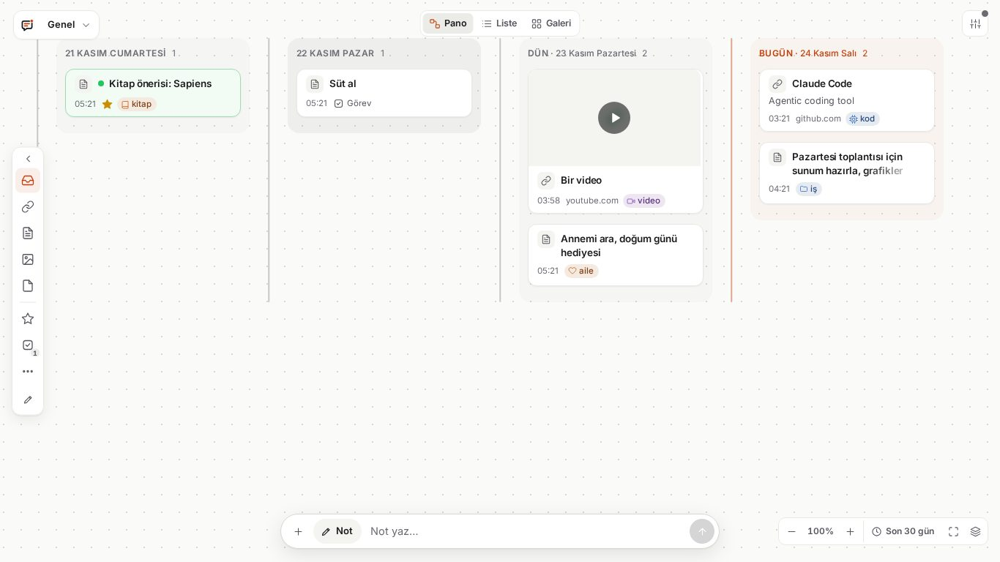
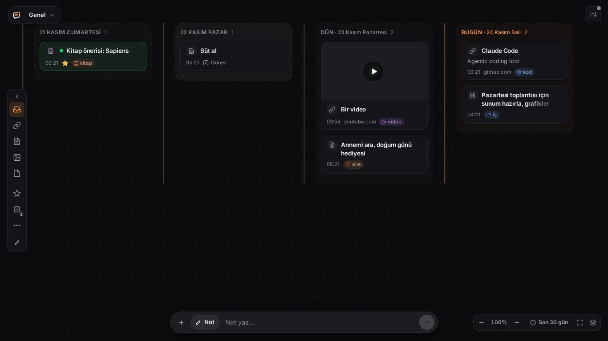
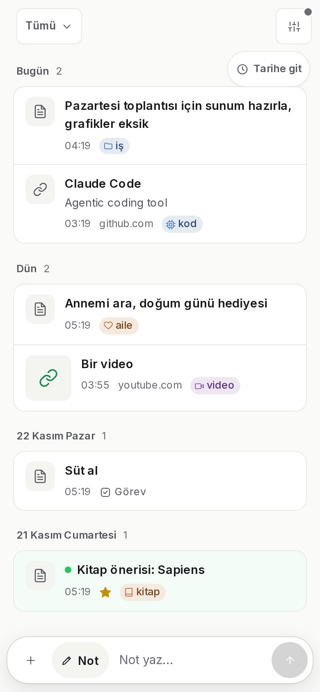
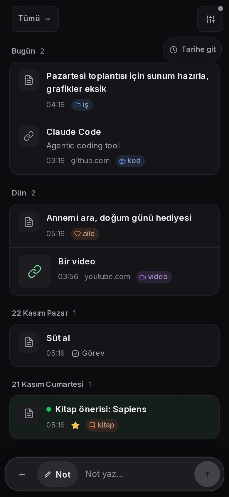

Kendine attığın her şey, tek yerde.
Link, not, foto ve dosyaları tek kutuya at. Claude başlık, konu ve etiket koyar; aradığını sorarsın, o bulur.
Hesap açmadan dene. Google ile girersen telefonla senkron olur.
Bugün
Dün
22 Kasım
Kaydet, unut, sorunca bul.
Not uygulamaları yazı için yapılmış. Senin kaydettiklerinin yarısı resim, link ve dosya. Nts hepsini aynı yerde tutar.
Tek kutu
Yaz, link ya da resim yapıştır, dosya bırak. Enter kaydeder, Tab ile Not · Ara · Sor arasında geçersin.
Claude düzenler
Yeni kayıtlara başlık, özet ve konu koyar, resimlerin içini okur, görevleri ve listeleri doldurur.
Akıllı arama
"geçen hafta kaydettiğim PDF" gibi doğal dil, yazım hatası toleransı, site: son:7g gibi süzgeçler ve anlamla arama.
Dört görünüm
Pano (sürükle, çiz, bağla), Liste, Galeri ve Yapılacaklar. Word, Excel, PDF ve Markdown içinde önizleme.
Telefon + bilgisayar
İkisinde de Google ile gir, kayıtlar anında senkron. Android'de herhangi bir uygulamadan Paylaş → Nts.
Şifrelerim
Ayrı ana şifreli kasa. Cihazda şifrelenir; Claude da arama da içini görmez.
Günler yan yana, kartlar elinin altında.
Her gün kendi sütununda. Kartları sürükle, üstüne çiz, iki kartı birbirine bağla. Uzaklaşınca günler okunur kalır.
- Claude imleci: yapay zekâ düzenlerken kendi imleciyle kartların üstünden geçer, ne yaptığını görürsün.
- Açık ve koyu tema, telefonda da aynı pano.


Cebinden at, bilgisayarda bul.
Ana ekrana ekle, uygulama gibi açılır. İnternet yokken de çalışır; bağlanınca kendiliğinden senkron olur.
- Paylaş → Nts: tarayıcıdan, galeriden, WhatsApp'tan tek dokunuş.
- Claude telefonda da: bilgisayarın açıkken istekler şifreli gider, ek kurulum yok.


Claude'u bağlamak tek komut.
Uygulama kurulumsuz açılır. Claude'un düzenlemesini ve soruları cevaplamasını istiyorsan bilgisayarına köprüyü kur (Linux, Node.js 20+, Claude Code girişli).
curl -fsSL https://raw.githubusercontent.com/Mohamedattiadev/nts/main/install.sh | bash
nts komutu, dosya yöneticisinde "Nts'a gönder" ve MCP sunucusu kurulur.Kayıtların senin.
- Sitede yalnız uygulamanın kodu var. Kayıtların cihazında ve kendi Google hesabına bağlı senkronda durur.
- Şifre koy dersen sunucuya giden her şey AES-256-GCM ile şifrelenir.
- Claude senin aboneliğinle, senin bilgisayarındaki
claudeüzerinden çalışır; kayıtların başka bir sunucuya gitmez.
Bir dene, bir dakika sürer.
Hesap açmadan başla; beğenirsen Google ile girip telefonuna da ekle.